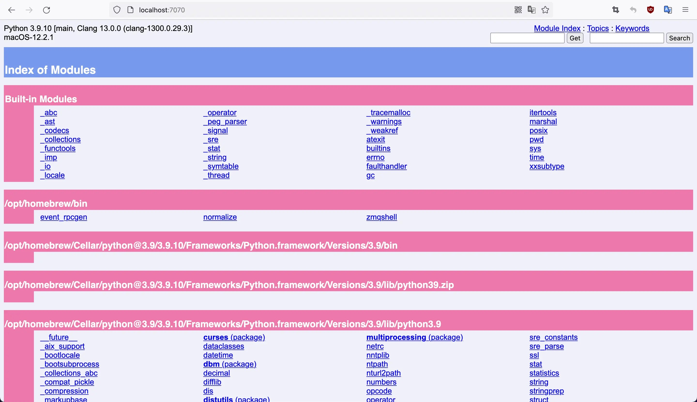

python2已死,不要再学再用啦！！！
官方第三方包网站,你绝对值得拥有!
# 源码编译安装
# 官网 python.org 下载压缩包，解压
# 然后，在./configure的时候，需要加上 --enable-optimizations参数，这样才能启用很多功能。
# 创建tutorial-env目录,复制一份python相关环境
python3 -m venv tutorial-env
# windows执行，激活虚拟环境
tutorial-env\Scripts\activate.bat
# Macos/unix执行，激活虚拟环境
source tutorial-env/bin/activate
#看看pip是否安装,现在一般都安装的,特别是采用brew,安装包之类
python3 -m pip --version
#手动安装,一般不用
python3 -m ensurepip --default-pip
# 升级pip
python3 -m pip install --upgrade pip
# 在某些情况下，我们需要查看第三方包的依赖包和被依赖包
# 命令输出的 Requires 和 Required-by
pip show pkg_name
# 能显示所有的依赖包及其子包,推荐用这个
pip deptree -p pkg_name
# 永久性切换国内清华源
pip3 config set global.index-url https://pypi.tuna.tsinghua.edu.cn/simple
# 换回默认源
pip3 config unset global.index-url
# 本次下载python中的Django包，这里使用的是豆瓣源
pip3 install django -i http://pypi.douban.com/simple
# 产生整个python环境的安装依赖,方便移值及复制
pip freeze > requirements.txt
pip install -r requirements.txt
# pylint执行pep8规范
pip3 install pylint
pylint xxx.py
# 更严格的检测flake8
pip3 install flake8
flake8 xx.py
# 强制统一代码风格
pip install black
black code_dir/xxx.py
# yapf是google开源的格式化代码工具
pip install yapf
# 统一import格式
pip3 install isort
isort xx.py
# 静态检查
pip3 install mypy
mypy xxx.py
# 比内置unittest更好用单元测试
pip3 install pytest
# content of test_sample.py
def inc(x):
return x + 1
def test_answer():
assert inc(3) == 5
pytest
if __name__ == '__main__':
# 我是主模块身份
# 列举任意对象的全部属性
dir(obj)
Anaconda包括Conda、Python以及一大堆安装好的工具包，比如：numpy、pandas等 Miniconda包括Conda、Python conda是一个开源的包、环境管理器，可以用于在同一个机器上安装不同版本的软件包及其依赖，并能够在不同的环境之间切换
# settings.py
LANGUAGE_CODE = "zh-hans"
TIME_ZONE = "Asia/Shanghai"
USE_TZ = False
docker odoo
from atomicwrites import atomic_write
with atomic_write('foo.txt', overwrite=True) as f:
f.write('Hello world.')
# "foo.txt" doesn't exist yet.
# Now it does.
# import cv2
pip3 install opencv-python
pip3 install numpy
# import PIL
pip3 install pillow
pip3 install image
# No matching distribution found for onnxruntime
# 暂时不支持m1芯片
pip3 install onnxruntime
#更多命令 pydoc3 -help
pydoc3 -p 7070

tencentcloud-sdk-python=3.0.720
pip3 install pymemcache
#!python3
from pymemcache.client.base import Client
client = Client('localhost')
memKey = '/memcached'
client.set(memKey, '<HTML><H1>hello,world!</H1></HTML>')
result = client.get(memKey)
print(result)
pip3 install redis
#!python3
import redis
client = redis.Redis(host='localhost', port=6379, db=0)
key = "python3Redis"
client.set(key, "From Python3 Redis")
resp = client.get(key)
print(resp)
今天这篇文章，聊一下python在web开发上的一些基础实现，阐述下自己理解中的WSGI、ASGI，以及拿uvicorn+FastAPI的组合举个ASGI应用的例子。
WSGI-同步web应用
def application(environ, start_response):
start_response('200 OK', [('Content-Type', 'text/plain')])
return [b'Greetings universe']
ASGI-异步web应用
async def application(scope, receive, send):
event = await receive()
...
await send({"type": "websocket.send", ...})
python3 -m pip install paddlepaddle==2.3.1 -i https://mirror.baidu.com/pypi/simple
pip3 install "paddleocr>=2.0.1" -i https://mirror.baidu.com/pypi/simple
安装paddleocrlabel
[m1芯片源码安装]
git clone git@github.com:PaddlePaddle/PaddleOCR.git
cd PPOCRLabel
python setup.py install
# 如果出现安装pyqt5失败,则采用brew install pyqt5
Installing PPOCRLabel script to /opt/homebrew/opt/python@3.9/Frameworks/Python.framework/Versions/3.9/bin
cd /opt/homebrew/bin
ln -s /opt/homebrew/opt/python@3.9/Frameworks/Python.framework/Versions/3.9/bin/PPOCRLabel PPOCRLabel
# 运行,第一运行会下载必要东西~/.paddleocr目录
PPOCRLabel --lang ch
# 针对特别业务,可以事先处理图片,再传入自动标注
# 直接下载whl文件,本地安装
pip3 install xxx.whl
# applie m1 芯片安装,会有问题，因为没有直接aarch64.whl,需要重头编译,但目前没有办法成功
pip3 install pyqt5
# 幸好brew可以帮忙编译
brew install pyqt5
python3 -m pip install visualdl -i https://mirror.baidu.com/pypi/simple
# Running VisualDL at http://localhost:8040/ (Press CTRL+C to quit)
./visualdl
# 网络结构-静态，把模型文件拖进去<https://www.paddlepaddle.org.cn/inference/master/guides/export_model/visual_model.html>
wheel是python新的发行标准，旨在替代传统的egg，pip >=1.4的版本均支持wheel， 使用wheel作为你python库的发行文件，有如下好处：
# 制作wheel安装包-方式1
python setup.py bdist_wheel
# 制作wheel安装包-方式2
pip wheel --wheel-dir=/root/whl ./
在 Python 3.5 中，Python PEP 484 引入了类型注解（type hints）
在 Python 3.6 中，PEP 526 又进一步引入了变量注解（Variable Annotations）。
具体的变量注解语法可以归纳为两点：
在PEP 8 中，具体的格式是这样规定的：
值得注意的是，这种类型和变量注解实际上只是一种类型提示，对运行实际上是没有影响的。
# OpenCV-Python接口中使用cv2.findContours ()函数来查找检测物体的轮廓。
contours, hierarchy = cv2.findContours (image,mode,method)
# mask是与iamge一样大小的矩阵，其中的数值为0或者1，为1的地方，计算出image中所有元素的均值，为0 的地方，不计算
cv::Scalar mean = cv2.mean (image, mask)
应用cv2.warpPerspective()前需先使用cv2.getPerspectiveTransform()得到转换矩阵
cv2.warpPerspective() 叫做透视变换。
# 以彩色模式加载图片
img = cv2.imdecode(np_arr, cv2.IMREAD_COLOR)
1、numpy.ones()函数
可以创建任意维度和元素个数的数组，其元素值均为1
2、使用语法
numpy.ones(shape, dtype=None, order='C')
b = np.ones((3,4),dtype=np.int64)
print(b)
[[1 1 1 1]
[1 1 1 1]
[1 1 1 1]]
self.input_tensor.copy_from_cpu(norm_img_batch)
self.predictor.run()
outputs = []
for output_tensor in self.output_tensors:
output = output_tensor.copy_to_cpu()
outputs.append(output)
if len(outputs) != 1:
preds = outputs
else:
preds = outputs[0]